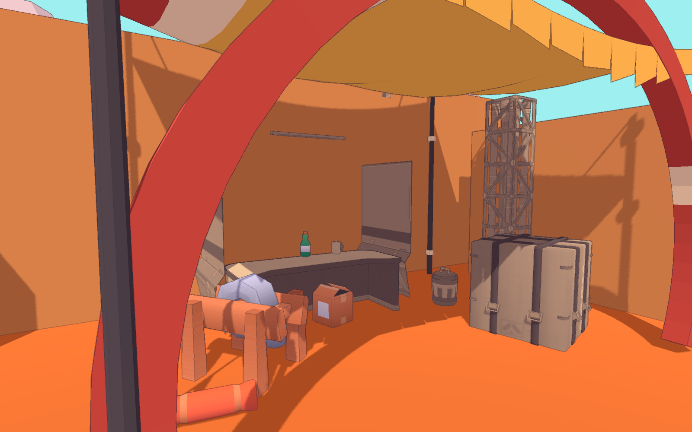
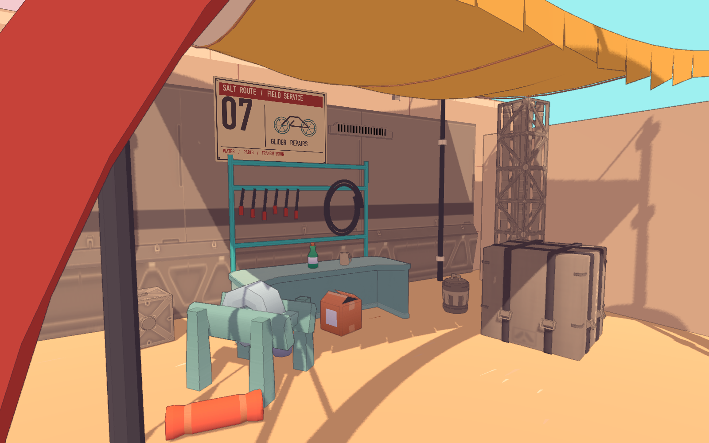
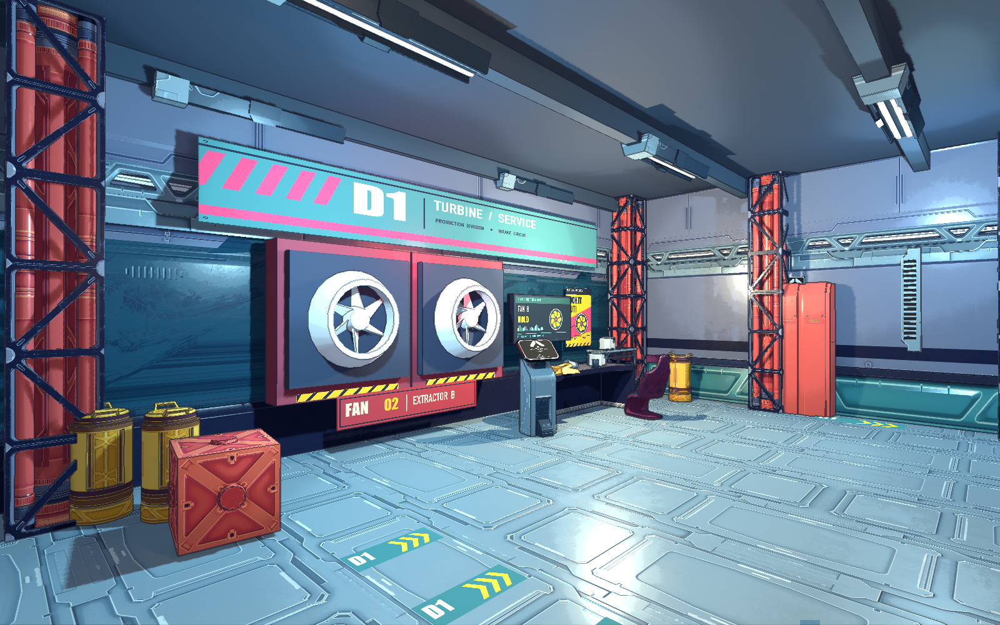
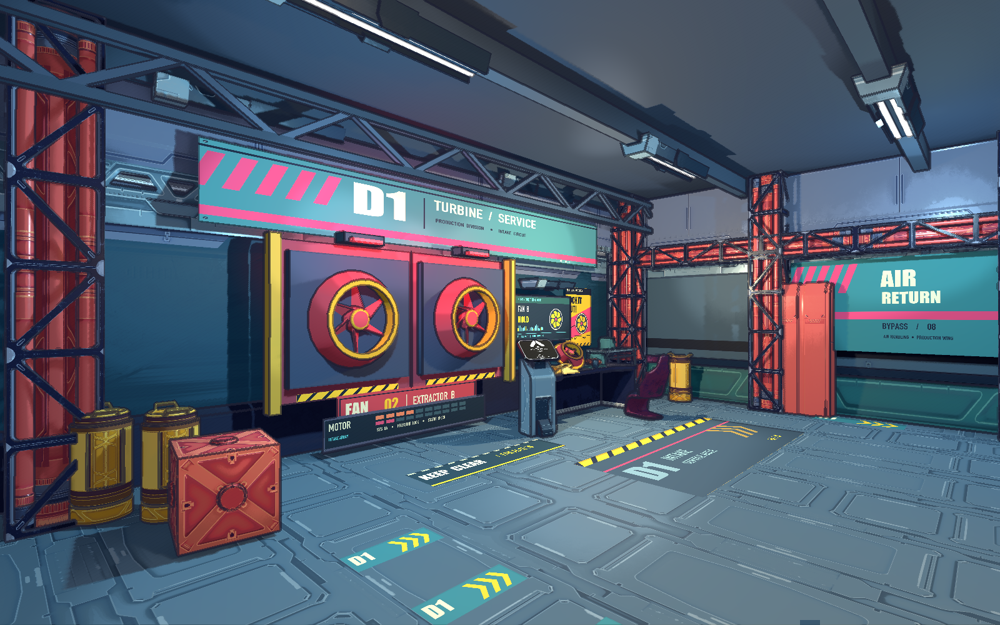
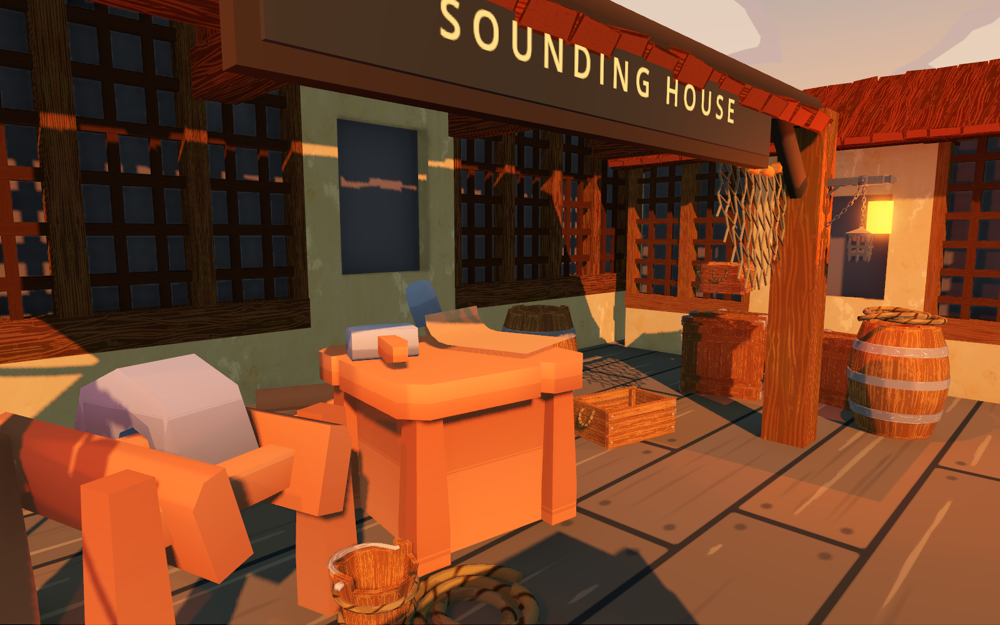
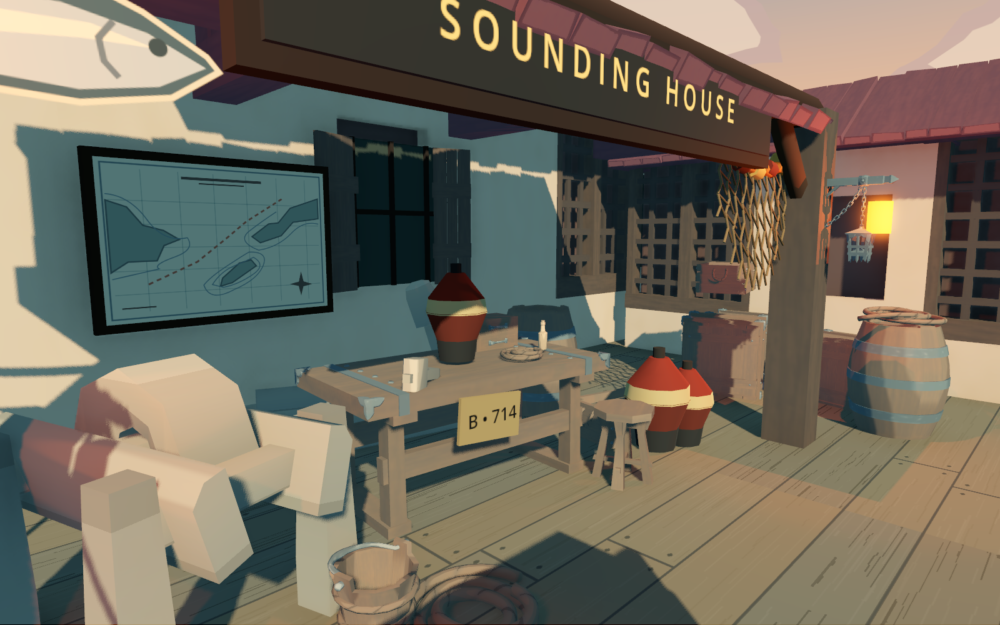

2026-11-19 · GPT‑6.2 ASTRA · GODOT 4.7.2 / METAL FORWARD+ · 1600 × 1000
三种游戏参考，三个受白盒约束的局部
在相同原测试场上，分别尝试 Sable 的线稿色块、Hi‑Fi Rush 的漫画工业场景与 DREDGE 的港边氛围。每组保留独立首轮、自主修订、主审反馈后的第三轮及专用 shader 对照。以下图片均由保存后重开的 Godot 场景输出，未经修图。
这次可见的改善主要来自素材配色、道具用途、遮挡和表面细节的取舍；shader 的作用各有范围。三组都仍与参考有差距。它们不是同构图的跨游戏 A/B，也不是模型或 effort 排名。原 Control、主工程和原白盒保留。
露天沙漠修理棚
Sable
第二轮已自主转正墙板、加入挂架和维修图；第三轮按主审反馈移开遮挡工位的红环，并用灰绿设备区分褐色后墙。磨轮、瓶杯与货箱是真实素材，红环、布棚、杆索和图形为补制。




Shader 对照看什么：仅移除 Ink 后处理作为对照，材质简化和配色两组共有。墨线能分开桌脚、箱角和杯瓶，但很细；整体视觉特征主要来自棚架轮廓和配色。
仍有差距：主参考中最醒目的商车结构并未找到对应资产，关键造型依赖补制。真实素材的细碎科幻接缝与极简磨轮仍不完全统一；总览保留明显白盒体块，远岩较规则。
查看主参考、来源与使用边界（参考图需联网）
主参考是开发者商店页第 09 张：环境占主导，红环、黄布、细杆索与地面留白清楚。原作是架空商车，本局部是地面修理棚；后景岩层另有参考，近景器械仍是制作推断。

可编辑第三轮场景 · 素材许可、参数及全部轮次 · 阶段提交 dccb436
室内双风机检修区
Hi‑Fi Rush
第二轮自主补齐检修活动：拆出的叶轮、夹具、状态屏与警示牌相互对应，入口可望见设备。第三轮减弱墙面污渍、地板反光与排线强度，设备色块更清楚。三组中，这组局部的场所用途最容易读出来。




Shader 对照看什么：对照只移除 PrintPass；模型、漆色、贴图和灯光相同。深蓝轮廓、近似亮度分阶和暗部排线一起比较，不是单独验证某一种效果，也不是原作 shader。
仍有差距：地板拼板、高处模块仍显重复，轮廓在细金属件处略碎；大型设备的剪影丰富度弱于参考。顶部白灯较均匀，参考中更强的局部光色分区尚未实现。
查看主参考、来源与使用边界（参考图需联网）
主参考来自 CGWORLD 对 Tango 背景团队的访谈。生产走廊中的深蓝桁架、青绿墙面、洋红标记、黄色警戒边与红任务灯均可读；辅助生产线截图仅取设备层次，舍去战斗 UI。

可编辑第三轮场景 · 素材许可、参数及全部轮次 · 阶段提交 70ca3df
半开放港边浮标修理棚
DREDGE
第二轮自主换掉过粗的工台，补上浮标、航图、卷绳和吊装线索，并收敛橙色。第三轮减少墙面重复斑驳、区分深木支撑和浅墙。工作区的用途比首轮明确，长投影与灯具形成远近层次。




Shader 对照看什么：同 UV 洗色底图和灯光下，比较印色/受光分阶与普通连续材质；天空两组共有，海面固定 phase=0.36。屋顶与水面差异更明显，工位近景差异较小。这里只验证静态画面，没有把水面运动作为完成项。
仍有差距：木板直檐与主参考的不规则茅顶有明显造型差异，村屋窗格也偏规整。水面仍有重复条带，磨轮比旁边木器更简，不能把配色接近当成原作还原。
查看主参考、来源与使用边界（参考图需联网）
主参考是官方 press kit 的 Exploring new places：临水屋、平台、暖墙与深屋顶清楚。辅助灯塔图提供冷水与暖灯关系。主图为俯视距离，不能据此断定近景工具、木纹细节。

可编辑第三轮场景 · 素材许可、参数及全部轮次 · 阶段提交 d2dfb9c
能力与流程观察
| 维度 | 从实机和记录能确认的结果 | 尚未证明的能力 |
|---|---|---|
| 找参考 | 三组主图均可读环境；分别记录建筑/材料/光影能支持什么，角色和战斗画面不再主导制作。主 agent 实际查看了三张主参考。 | DREDGE 的俯视主图不足以确定近景道具；Sable 的商车与白盒局部存在结构差别，需要承认转译边界。 |
| 找素材 | 从真实免费包选择墙、门框、顶片和 props，保留来源与 CC0 许可，区分 Standard 免费范围。DREDGE 二轮换用了更合适的工作台。 | 三组主要复用既有 Quaternius/Kenney 授权缓存，候选家族有限。本轮证明了选取与适配，不能宣称新资产检索质量显著提升。Sable 关键红环轮廓仍靠补制。 |
| 细节填充 | 维修图/挂架、拆卸叶轮/夹具/状态屏、浮标/航图/吊索形成各自活动。第三轮消除了部分遮挡或抢眼的表面斑驳。 | 磨轮与器械的精细度不齐，若干标识重复、工具排布过整齐。局部之外仍为未制作白盒。 |
| 风格统一 | 三组拥有不同色彩分工和表面处理；Hi‑Fi Rush 的工业色块与活动较完整，Sable 近景经调整后更易读。 | DREDGE 的屋顶轮廓、Sable 的主体构造、Hi‑Fi Rush 的大设备剪影仍不够贴近参考。统一调色无法补齐这类差距。 |
| 光影 | 室内有顶棚与可见灯具，室外有布棚/屋檐阴影、长投影和深浅层次。首轮过曝或过橙得到修订。 | Hi‑Fi Rush 顶部照明仍较均匀；Sable 远层过简；DREDGE 海面仍有重复条带。没有将静态渲染结论外推到移动稳定性。 |
| Shader | 可编辑源码及参数随工程交付；分别有仅移除墨线/印刷后处理、以及替换分阶材质的同场对照。 | 这些是可见特征的近似，不是原游戏技术复原。没有单独验证每个内部效果，更不能把全轮改善归因于 shader。 |
本轮实际工作顺序
共同白盒与局部范围 → agent 独立找参考、筛素材和制作首轮 → 自主看图修订 → 主 agent 看参考及同机位实机图 → 每组一次有范围的反馈 → 第三轮与 shader 对照 → 保留证据并提交。没有增加控制器、交互面板或通用回归框架。
三组 subagent 均显式指定 gpt-6.2-astra，fork_turns=none；启动时没有显式设置 reasoning_effort。工具约定为继承父任务，实际档位未核实。用户看到的 light 没有本轮评测依据；这项遗漏已记录，本轮不能用于判断 effort 高低的收益。
使用仓库当前 godot-envart skill，shader 指引归档于 5589d0f；其余任务流程沿用已有版本。允许自制 shader 的规则见 风格化着色指引。这是三个案例观察，用户美术验收仍待定。
打开与继续编辑
用 Godot 4.7.2 导入下列独立工程，按 F5 打开最新第三轮；相机节点可在编辑器中切换预览。重拍命令在各工程 README，输出时保留旧图。当前截图为 macOS Metal Forward+；屏幕法线后处理需要对应的渲染能力，未验证其它后端。
三个源白盒副本均与共同输入逐字节一致。各制作 agent 核对了场景内原 17 个 body 的变换、网格/碰撞与三组镜头；主 agent 复核源文件、shader 对照差异，并查看第三轮九张实机图。未运行与本次环境美术无关的玩法测试。